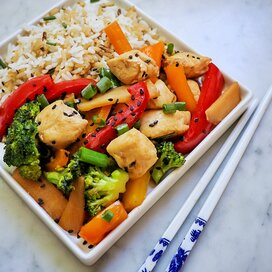

Sesame Chicken Stir-Fry

Very tasty and wholesome sesame chicken stir-fry dish.
Ingredients
Teriyaki Dressing
- 1/2 cup low-sodium soy sauce
- 1/2 medium orange, juiced
- 2 teaspoons sesame oil
- 2 teaspoons stevia powder
- 1/2 teaspoon garlic powder
- 1/8 teaspoon ground ginger
Stir-Fry
- 1 tablespoon vegetable oil
- 2 skinless, boneless chicken breasts, cut into bite-sized pieces
- 3 cloves garlic, minced
- 1 cup broccoli florets
- 1/2 cup canned bamboo shoots, drained
- 1/2 cup chopped red bell pepper
- 1/2 cup chopped yellow bell pepper
- 1/2 cup chooped orange bell pepper
- 1/2 cup thinly sliced green onion
- 1 tablespoon black sesame seeds
- 1 cup cooked long-grain white rice
- 1 cup cooked wild rice
Steps
- Combine soy sauce, orange juice, sesame oil, stevia powder,
garlic powder, and ginger for teriyaki dressing in a small saucepan.
Bring to a boil over medium-high heat, stirring constantly; continue
cooking until the mixture thickens slightly. Remove and set aside.
- Heat a large skillet over medium-high heat. Add vegetable oil and
heat until shimmering, 1-2 minutes. Add chicken and garlic; stir-fry for
2-3 minutes. Add broccoli and continue to stir-fry, 4-6 minutes. Add
bamboo shoots and bell peppers; cook for an additional 4-6 minutes.
- Carefully pour the teriyaki dressing into the skillet; cook until chicken
is no longer pink in the center and juices run clear and vegetables are tender,
about 5 minutes more.
- Remove from heat and stir in green onion and sesame seeds, reserving
some of each for garnish. Serve immediately over cooked white and wild rice
with the reserved green onions and sesame seeds.
Back to main page